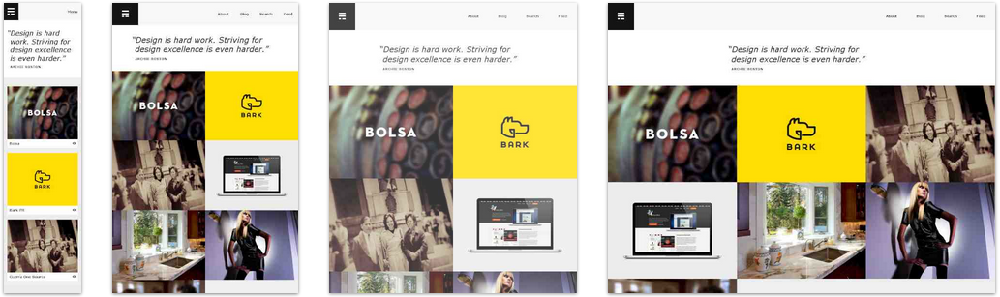
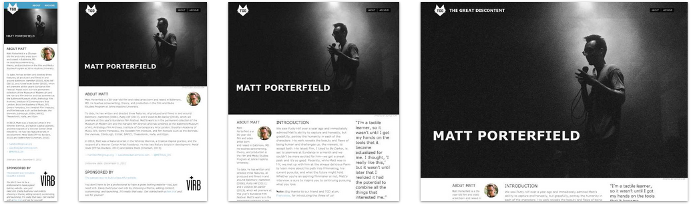

LIT Work XP Reference Guide
RWD - Responsive Web Design
One size fits all
Responsive Web Design is something that's really started to gain considerable attention in the world of web design/development over the past 3 years. It all started when web designer, Ethan Marcotte, crafted a famous article which changed web page structure as we know it. The main thing you need to know about responsive web design is that when implemented properly, it makes a website respond to its environment(eg. suitable on any device). This shift took time to gather traction but now in 2014, if businesses are wanting web sites created, they want them to be responsive.
Why go responsive?
Going responsive has it's own drawbacks but they are long-outweighed by the positives. The biggest issue in going responsive is time. The original approach to creating and positioning web sites was to use table-based layouts but this posed problems when users reduced their browser sizes or switched to smaller screens, forcing web sites to look strange and even content moving offscreen and out of view for the user. However, once developers/designers become more aware of a 'responsive first' approach, they can tailor web sites to respond to different screen dimensions much easier and with greater speed.
We are now living in an era where information is made readily-available to users via the mobile web. People are no longer waiting until they can get to a desktop/laptop device to view websites, they're using their smartphones or tablet devices. This is where RWD really excels as it gives the user a tailored-approach depending on the device they are using. This ensures that they aren't missing any content and everything they are looking for is being presented on screen as the developer/designer intended. Jeremy Keith once said "Stop thinking in pages. Start thinking in systems" - By tailoring websites per device(desktop, laptop, tablet, smartphone, etc) using RWD, we achieve this.
Below are various examples that highlight the impact of Responsive Web Design. These are only a few examples taken from mediaqueri.es. Feel free to visit the site for more examples and witness how many companies are using RWD for their coporate websites.
Pack's responsive layout (sourced from mediaqueri.es)

Erik Ford's responsive layout (sourced from mediaqueri.es)
The Great Discontent's responsive layout (sourced from mediaqueri.es)
How to go responsive
Responsive Web Design is achieved by incorporating the following 3 things into practice when designing/developing websites.
We will explain these in more detail below.
CSS media queries
Media queries are at the heart of Responsive Web Design. Through the use of media queries we can target specific browser sizes and determine how to display web pages based on the result they return. Media Queries have been around for a long time but it's only recently that web designers and developers have started to truly understand their capabilities.
By using media queries we can make our CSS adapt page content to desktop, tablet and mobile layouts that will ensure the user doesn't miss anything important. Media queries are CSS properties and should be kept in CSS files when used on web pages. Below are examples of three different media queries. Each query targets a different browser size and depending on the size, limits the sizing of the HTML element 'container'.
/* Desktop sizing */
@media screen and (max-width: 1000px) {
#container { width: 100%; }
}
/* Apple iPad sizing */
@media screen and (max-width: 768px) {
#container { width: 70%: }
}
/* Smaller tablet sizing */
@media screen and (max-width: 600px) {
#container { width: 50%; }
}
Fluid media
In earlier times of the world wide web, it was normal for images to be set to a specific height and width in pixels but this always came with a caveat: If you minimized or maximized the web browser, then the images would begin to move out of place and leave web pages looking horrible.
Responsive images are a big part of RWD. If your images aren't responsive, then everything's going to look out of proportion when users minimize/maximize the screen size. One of the best ways to work around this issue in modern times has been to place our images inside a <div> container and to set its max-width to 100% like in the example below:
img {
max-width: 100%;
}
This ensures that images cannot span any greater in size than the size of the <div> that contains them and means when users scale down from desktop screen sizes to smaller screen sizes that the images will scale down appropriately and still look correctly-positioned on the web page. If you don't believe us, click here and re-size the browser to see the outcome :) It's also worth pointing out that this works well with embedded videos, too.
There is another way to resize images appropriately that requires writing media queries directly in-line inside the <picture> element. This is displayed below:
<picture alt="description"> <source src="small.jpg"> <source src="medium.jpg" media="(min-width: 400px)"> <source src="large.jpg" media="(min-width: 800px)"> </picture>
Both approaches work, but for best practice, we recommend using the first example(max-width).
Grid-based layout
The final component that we need to cover is grid-based layouts. When we think of web pages, we have to remember that they are documents. We have to step back and think of them in a print format, just like a page in a newspaper. One thing that always stands out when reading a newspaper is that the columns are always correctly alligned all throughout. What responsive web design does is encourage designers/developers to start thinking about structuring web pages as though they were printed articles, using a grid-system that keeps everything correctly positioned and ensures the user can view all of the content without having to scroll in the web browser.
The grid is a part of responsive design that really comes down to the designer/developer's personal preference - Eg. Do you go for a grid-based framework(Bootstrap's grid, 960 Grid System, Foundation, etc) or create your own grid-based layout with CSS? Both options have their own strengths and it really depends on how much time you have to create a web site as well as how experienced you are with responsive design principles. For this reference guide, we used Twitter Bootstrap's pre-baked responsive styling - Primarily to get this guide up and running as quickly as possible. We also used it for the car insurance application(just minimize the page and watch how the options collapse into a drop-down menu, etc).
By adopting a grid-based layout, we can split page content into columns. This ensures that when the viewport is reduced/increased, the page columns can be re-ordered to ensure everything is visibile and still in allignment. The code below illustrates a very simple grid-based approach in CSS.
/* 12-Column Grid Widths */
.column-1 {width: 100%;}
.column-2 {width: 50%;}
.column-3 {width: 33.33%;}
.column-4 {width: 25%;}
.column-5 {width: 20%;}
.column-6 {width: 16.6666666667%;}
.column-7 {width: 14.2857142857%;}
.column-8 {width: 12.5%;}
.column-9 {width: 11.1111111111%;}
.column-10 {width: 10%;}
.column-11 {width: 9.09090909091%;}
.column-12 {width: 8.33%;}
By using the grid CSS classes displayed above, we can ensure our web pages are correctly positioned and with the combined use of media queries, it means when the viewport is reduced/increased, the columns can be reduced/expanded to fit the screen.
Using the 12-Column grid that we have included above, we can structure our web pages. Below is a simple example of how we can use our grid structure web page content.
<div class="responsiveContainer"> <div class="column-1"> <h3>Header 1</h3> <p>Test content for section 1</p> </div> <div class="column-2"> <h3>Header 2</h3> <p>Test content for section 2</p> </div> <div class="column-2"> <h3>Header 3</h3> <p>Test content for section 3</p> </div> </div>
By using the code display above, we are creating a column that spans all across the page(100%) and another two columns that will sit directly below but side by side at 50% widths. In taking this approach it means we can simply use CSS media queries to target when the screen is smaller and then we can make the percentages of the columns reduce to 100%, which will then float them all in a nicely-alligned list.
This is a very brief introduction to how RWD works, especially in terms of explaining grid-based layouts. Please feel free to investigate grid-based layouts further by clicking on the links in the Further Reading section.
Further Reading
Primarily, the purpose of this reference guide is to give you a basic understanding of the core concepts of the languages and development principles covered in the work exerience project. If you are interested to learn more about Responsive Web Design and work through various examples please visit the links below.